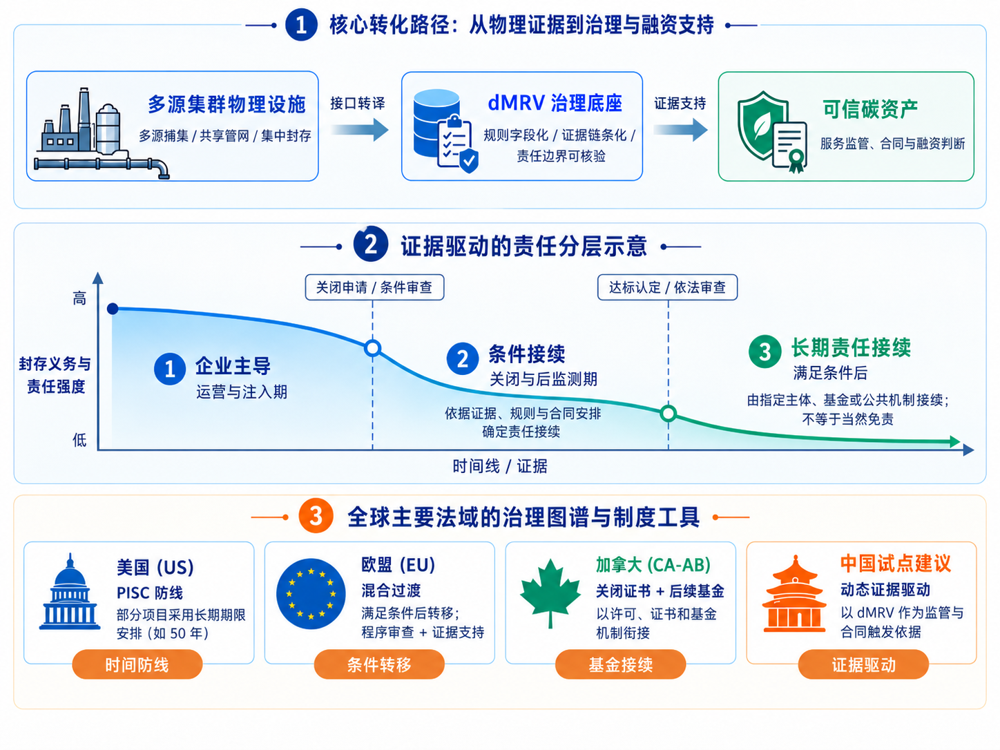
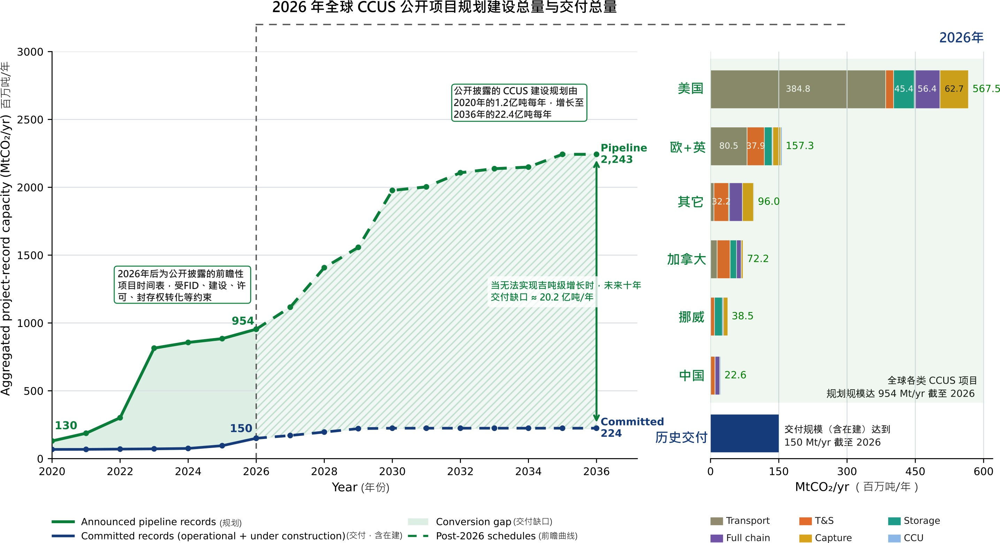
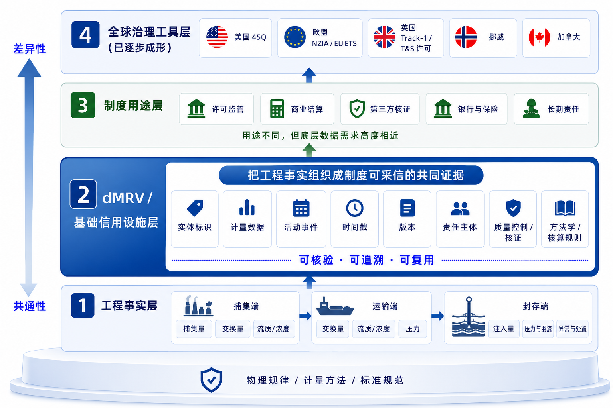

研究方法、分析框架与材料说明
本文采用制度比较，并以 TIS 七项功能作为结构化诊断清单而非评分模型[80, 81]。企业家活动（包括项目开发与工程试验）、知识开发与扩散用于观察工程和地质能力形成；方向引导与合法性用于观察政策预期、制度认可、许可与责任规则能否形成稳定预期；市场形成用于观察减排价值与长期服务需求；资源动员用于观察储层评价、先导基础设施和融资资源能否投入。考虑到 CCUS 的网络型特征，本文额外观察这些功能能否跨“源—网—库”同步形成。
本文围绕三个问题展开：为什么工程可行的 CCUS 项目不会自然形成规模化集群；主要法域如何组织价值形成、风险分担与跨主体协作；dMRV 如何使运行事实进入交付、责任和外部信任等制度过程。本文沿用经典 TIS 功能分类，其分析增量主要在于将“源—网—库”同步形成作为网络型 CCUS 的跨功能协调条件，并将 dMRV 从项目级监测与报送数字化扩展为跨主体证据组织问题。本文以“产业信用基础设施”概括后一种能力，这是一项工作性概念，其边界仍需通过真实集群中的制度使用继续检验。
本文属于前瞻性政策研究，分析边界限定于工业集群场景下的 CCUS 地质封存项目，核心对象包括多源碳捕集、共享运输网络以及咸水层或枯竭油气田集中封存。自然碳汇和一般自愿碳抵消项目不属于本文主要讨论范围。
材料主要来自三类来源：法规、标准和政策文本用于确认制度要求和监管边界；企业、项目方及主管机构公开材料用于确认项目状态、技术路径和运行安排；同行评议文献与机构研究报告用于支撑技术判断、产业趋势和情景分析。对商业合同细节与实际运营数据等未充分公开事项，本文仅作与证据强度相匹配的方向性判断，依据与边界见附录 B。本文不将政策出台、项目建成或标准发布视为市场成熟、法定责任接续或净减排已获确认，也不将先导性规划等同于治理定型。
政策与案例材料以截至 2026 年 9 月 22 日采用的公开资料为比较边界；项目分布统计另采用 2026 年 3 月数据库快照，不代表截至报告修订日的项目普查。
1 CCUS 规模化的系统障碍与治理转型
1.1 从吉吨级需求到交付鸿沟
风光水核、终端电气化和能效提升将承担净零转型的主体减排任务，但钢铁、水泥、化工等行业仍存在难以消除的过程排放和高温工艺需求；部分低排放能源生产仍可能形成 CO2 捕集需求，航空、航运和农业等领域难以消除的剩余排放则需要碳移除加以抵消。因此，主流净零情景对碳捕集、利用与封存（CCUS）提出了吉吨级部署要求[26]。这一要求进一步进入国家规划、产业目标和政策工具：欧盟设置 CO2 注入能力目标，英国推进集群排序和输送封存商业模式，美国以《美国国内税收法典》第45Q条（45Q）税收抵免改善项目收益预期，挪威和加拿大则依托油气工程、公共资本和长期责任安排发展共享封存能力[1, 2, 4, 34]。
上述政策预期已体现为快速扩张的项目规划，但规划储备与工程落地之间仍存在显著差距。本文所称“交付鸿沟”，指净零路径提出的规模化部署需求与实际工程交付能力之间的落差，图 1 以项目储备与已运行/在建记录的转化差距作为成熟度的代理指标。按 2026 年 3 月数据库快照口径，预计于 2026 年底前投运的全球 CCUS 前瞻性项目规划记录规模约为 954 MtCO2/yr；其中，86 个已运行项目与 37 个预计于 2026 年底前投运的在建项目合计约为 150.3 MtCO2/yr。按项目方披露的投运时间表，至 2036 年前后，前瞻性规划记录规模约为 2,243 MtCO2/yr，而已运行和在建项目的累计记录规模约为 224 MtCO2/yr[27, 73]。
规划规模快速增长，并不意味着捕集、运输和封存能力能够同步形成。捕集项目较容易形成规划储备，而运输网络、封存库容、注入井体系、监测设施和长期责任安排往往需要更长建设周期和更复杂的跨主体协调。以美国为例，Princeton Net-Zero America 研究显示，实现净零情景所需 CO2 输送网络规模可能达到约 10 万公里，说明 CCUS 规模化不仅依赖捕集设施建设，也依赖跨区域运输和共享基础设施的同步形成[29]。捕集能力只有获得运输封存服务、收入机制、核证和长期责任安排的共同支撑，才能转化为稳定交付。CCUS 规模化的难题由此从“技术是否存在”转向“多个环节和主体能否共同形成产业能力”。
百万吨级 CCUS 项目已在加拿大、挪威等地持续运行，并形成长期监测、跨主体交付和公开披露实践[9, 11, 27, 58]，证明了单体工程的可行性。但进入规模化阶段后，项目全寿命期持续承担捕集、压缩、运输、注入和监测带来的额外能耗及相应运行成本；共享设施还要在初始流量、容量利用和远期扩容之间取得平衡；地质封存结果必须持续得到证明，异常、损耗和责任也要在不同主体之间明确归属；长期资本则据此判断合同、现金流和风险边界[23, 74]。规模化进程的核心问题，由此已由“能否建成”转向“能否长期运行、能否组织为网络、能否形成可信减排结果”。
中国尤其值得观察：大型能源和工业企业、公共组织资源与工程供应链使项目动员和工程实施具备较强基础，但捕集源、运输封存设施和长期责任往往跨行业、跨区域和跨部门。如何把工程动员能力转化为稳定的跨主体治理能力，为理解不同于成熟市场体系的 CCUS 集群形成路径提供了另一类样本。

1.2 地质封存的结构性约束
CCUS 的气候效益最终取决于捕集的 CO2 能否得到长期、稳定的地质封存。地质封存的结构性难题在于，关键地下风险难以被直接、连续和低成本地观察。CO2 注入后，储层压力、羽流迁移、盖层封闭性和井筒完整性都会长期演化，储层非均质性、断裂系统和注采历史又进一步增加不确定性。因此，单次监测通常只能反映特定时间窗口内的状态，长期稳定性判断需要连续观测、模型更新与多类证据相互印证[48, 49]。
这一特征带来一个基本张力：地下风险是连续演化的，而监测与核证通常以阶段性调查、周期性报告和模型更新的方式开展。3D/4D 地震、阶段性测井、压力监测和储层模拟仍是判断封存安全性的重要手段，但成本较高、周期较长，难以单独形成连续更新的风险信号[50, 51]。治理的难点因此在于，如何依据监测结果核查运行是否处于许可边界内、实测与模型是否相符，并识别异常、判断责任状态。
进入多用户集群后，这一问题会进一步放大。同一封存库需要承接不同来源和批次的 CO2，地下状态变化又可能同时影响多个客户、合同和责任主体。长期封存由此不再只是单体项目的安全问题，而成为跨主体、跨周期的治理问题。
1.3 从“单点技术示范”到“集群化枢纽治理”
早期 CCUS 多以“单源—单汇”一体化示范为主，工程、企业和责任边界大体重合，商业结算与责任界定多可在企业内部协调。进入共享基础设施后，捕集、运输与封存由不同主体投资运营，储层开发、运输调度与长期监测跨越多个企业与监管层级。单个环节合规已不足以保证网络整体稳定，治理对象随之扩展为跨主体、跨环节和跨周期的运行网络。
集群化带来三项结构变化：
物理边界动态化。多家企业共用运输与封存系统后，CO2 流量、流质、系统损耗和运行排放需要在不同主体之间持续计量与归属，计量边界不再等同于法人边界。
商业关系解耦化。捕集方、运输方与封存方可以分别提供服务，容量分配、交付确认、费用结算和违约责任需要由合同与网络规则明确[8, 25]。
风险传导联动化。流质异常、运输受限或封存端注入能力下降，都可能影响其他用户的交付和减排确认，局部工程风险由此转化为网络风险[38, 58]。
集群化因此不是单体项目的简单扩容，而是产业组织方式和治理单元的改变。捕集、运输和封存能否同步投资、稳定运行并共同承担长期责任，取决于价值、基础设施、规则和主体能力能否被组织为一个相互强化的产业系统。
1.4 集群形成需要解决的三类系统问题
CCUS 集群形成需要同时解决价值形成、跨主体协调和制度采信三类问题。它们分别决定项目是否具有持续收益基础、价值链能否同步投资并稳定运行，以及工程结果能否被不同制度主体共同使用。
本文将能源惩罚限定为物理指标，即在一致产出和核算边界下，为实现单位净避免排放所增加的一次能源投入。能源价格及机会成本决定其经济后果，能源碳强度则通过附加排放进入净减排核算。能源惩罚需要通过捕集与压缩技术进步、流程和效率优化、清洁能源协同以及源—网—库系统优化持续降低。
与贯穿全寿命期的能源惩罚这一物理约束不同，首发风险属于早期启动约束：前者主要通过捕集能效提升、流程优化与清洁能源协同持续压降；后者通常需要公共资本分担前期风险、网络统筹规划与长期契约安排共同化解。
网络投运后，来源身份、交接计量、损耗与排放分摊、地下风险、异常处置和责任阶段需要被不同主体持续复核。核证机构、客户、监管部门、银行和保险机构并不需要完全相同的数据，却需要能够回溯到同一组工程事实。本文据此将主要制度用途归纳为三类接口：交付与归因、风险与责任、金融与外部信任。
上述三类问题依次对应 CCUS 产业系统的价值基础、协作网络和信用底座，构成了本文的核心分析主线：以“政策启动项目”弥补初始价值缺口并对冲首发风险，以“契约组织协作”协调跨主体投资与运行边界；进而以“证据沉淀信用”使工程事实转化为支撑结算与监管的产业信用基础设施，最终由“运行推动规则”实现治理制度的持续演进。本文将 dMRV 作为连接工程运行与制度使用的核心机制，其系统框架正是支撑这一治理转型的关键底盘。
2 治理组合的形成逻辑与产业推动力
在单个项目之外，价值形成、跨主体协调与制度采信如何被制度组织起来，是 CCUS 走向规模化的核心治理任务。主要法域形成了不同的治理组合：税收与碳约束形成减排价值，公共资本和长期合同分担首发风险，集群规划与基础设施规则协调“源—网—库”，许可、长期责任和财务保障限定运行边界。本文据此比较这些工具如何在不同产业结构、资源禀赋和制度体系下组合，并以技术创新系统（TIS）框架识别各阶段首先需要补足的功能。
2.1 全球 CCUS 治理对标矩阵
表 2-1（全球治理对标表） 从 CO2 监管属性、封存空间权属、关闭后监测、责任移交、财务保障以及许可与市场组织等维度呈现美国、欧盟、英国、加拿大（联邦/阿尔伯塔）、挪威和中国的制度结构。这是各法域当前的制度截面；要理解其差异，还需要回到制度形成过程，观察各法域首先面对什么瓶颈、由谁承担早期风险，以及政策工具如何由示范启动逐步转向稳定运行。
| 监管维度 | 美国 (US) | 欧盟 (EU) | 英国 (UK) | 加拿大（联邦/阿尔伯塔）(CA-AB) | 挪威 (NO) | 中国 (CN) |
|---|---|---|---|---|---|---|
| CO2 监管属性与适用框架 | 专用地质封存井适用地下灌注控制体系的 Class VI 规则；45Q 按合格碳氧化物（qualified carbon oxide）及其处置用途确定税收抵免资格。 | 《地质封存指令》管理 CO2 流，要求其绝大部分由 CO2 构成，不得以处置废物为目的掺入其他物质；合规封存与碳市场核算衔接。 | 运输封存网络适用《能源法 2023》的经济许可与监管；海上储层开发和注入另需取得封存开发许可及运行许可。 | 联邦投资税收抵免按设备与用途确定资格；阿尔伯塔通过封存权配置及注入审批管理地下封存活动。 | 海底储层开发、CO2 运输和封存适用专项许可；跨境海运还需满足《伦敦议定书》及有关双边安排。 | 《生态环境法典》提供生态环境与气候治理的一般依据；封存还涉及安全、自然资源、管道和海域管理，尚无统一的 CCUS 专项法律制度。 |
| 封存空间权属 | 主要依据州财产法及土地权属确定，可能涉及私人、州有或联邦土地及地下空间协议；Class VI 许可不授予孔隙空间使用权。 | 欧盟统一规定封存许可与环境安全要求；孔隙空间或地下空间权属由成员国法律确定。 | 海上封存需分别落实封存许可和海床使用权；后者涉及 The Crown Estate 或 Crown Estate Scotland，许可机关依海域管辖确定。 | 阿尔伯塔《矿产与矿物法》明确孔隙空间归省政府所有，不随土地或矿权授予而转移；开发者须另行取得封存权。 | 国家拥有大陆架海底储层的资源权利，通过勘探和开发利用许可管理储层使用。 | 地下空间、矿产资源、海域使用和生态环境监管分属不同制度；国家层面尚未形成统一适用于 CO2 封存的孔隙空间确权规则。 |
| 关闭后监测期 | 停止注入后的场地管理（PISC）默认 50 年；可依场地证据批准其他期限，结束前须证明不再危及地下饮用水。 | 关闭后至责任转移的原则性最短期限为 20 年；充分证明永久封存条件已满足时可缩短。责任转移后仍有监测义务。 | 关闭后原则上至少 20 年方可转移责任；永久封存条件提前满足时可申请缩短，并须满足其他移交条件。 | 依批准的监测、测量与核证计划及关闭计划执行；责任接续须取得关闭证书，不能仅凭经过一定年限认定。 | 关闭后原则上至少 20 年方可转移责任；永久封存证据充分时可批准缩短，并须满足封场和财务等条件。 | 已有地质封存技术标准；尚未见全国统一规定、与法定责任转移相衔接的关闭后监测期限。 |
| 责任移交 / 公共接续机制 | 联邦 Class VI 规则不提供统一责任移交；部分州法另行设计封存项目关闭后责任或基金接续机制。 | 满足永久封存、封场、财务缴付及批准等条件后，监测、纠正措施、泄漏配额清缴和规定范围内的环境责任转移至主管机关。 | 经批准终止封存许可后，规定的监测、纠正措施、环境及碳市场义务转移至主管机关；虚假陈述或过失等情形可追偿。 | 经阿尔伯塔能源监管机构（AER）审查并取得关闭证书后，省政府接续法定范围内的责任；关闭后管理基金提供资金支持。 | 满足封场、稳定性和财务缴付要求后，相关责任转移至国家（由能源部代表）；移交前责任仍由运营方承担。 | 国家层面尚未建立统一适用于 CO2 地质封存的关闭证书、责任转移和公共接续机制。 |
| 财务保障 | 须为纠正措施、注入井封堵、注入后场地管理、场地关闭和应急补救落实财务保障。 | 注入前落实财务担保；责任转移前另行缴纳财务贡献，至少覆盖移交后 30 年的预期监测成本。 | 注入前维持财务担保；责任转移前缴纳至少覆盖转移后 30 年预期监测成本的财务贡献。 | 运营者按核定费率和注入量向关闭后管理基金缴费，支持政府接续后的监测、维护和补救；该基金不等于运行期全部财务保障。 | 注入开始前落实财务担保；责任转移前缴纳至少覆盖转移后 30 年预期监测成本的财务贡献。 | 国家层面尚未建立统一适用于 CO2 地质封存的专项财务担保和关闭后管理基金制度。 |
| 核心法律与规则 | 《安全饮用水法》下的 Class VI 规则（40 CFR Part 146 Subpart H）；26 U.S.C. §45Q；州孔隙空间和长期责任规则。 | Directive 2009/31/EC；EU ETS 相关规则；Regulation (EU) 2024/1735 (NZIA)；Industrial Carbon Management Strategy。 | Energy Act 2023；Energy Act 2008；Storage of Carbon Dioxide (Licensing etc.) Regulations 2010；Termination of Licences Regulations 2011。 | 阿尔伯塔《矿产与矿物法》第15.1条及封存相关条款；《碳封存权条例》；AER 监测与关闭要求；联邦 CCUS 投资税收抵免。 | CO2 Storage Regulations 2014；Pollution Regulations Chapter 35；大陆架相关法规；London Protocol 及双边安排。 | 《生态环境法典》及相关资源、安全管理法律；GB/T 42797-2023、46875-2025、46878-2025、46871-2025 等推荐性国家标准。 |
| 许可、激励与市场组织 | EPA 或获主要监管权的州负责 Class VI 许可；45Q 提供税收激励，开发者另行落实土地、管道和运输封存合同。 | 成员国负责封存许可；碳市场、创新基金及 NZIA 的 2030 年注入能力目标和生产商贡献义务共同支持开发。 | 优先集群遴选、运输封存经济许可与商业模式支持相结合，协调网络融资、首批用户接入和长期运行。 | 联邦投资税收抵免、省级碳合规机制与枢纽封存权配置并行；阿尔伯塔要求枢纽开发兼顾开放接入和合理成本回收。 | 国家组织海上储层许可，并支持首批全链条示范；北极光面向国内外客户提供运输和封存服务。 | 规划示范、绿色金融分类和技术标准持续完善，已部署跨行业集群场景；专项封存许可、接入和减排价值确认仍需制度衔接。 |
2.2 主要法域的治理形成路径
各法域都需要解决排放源减排激励、管网与储层投资信心，以及关闭后长期安全责任的制度组织问题。由于产业基础、资源禀赋与国家能力差异，各法域形成了截然不同的制度推动力与协作模式，其关键法规与监管边界如表 2-1（全球治理对标表） 所示。
2.2.1 美国：税收激励下的项目驱动路径
美国主要通过税收激励吸引企业开发项目。《美国国内税收法典》第45Q条按符合条件的捕集与处置量提供税收抵免，使减排活动获得可预期的经济回报。开发商据此寻找排放源和封存场地，并通过合同安排运输服务、费用支付和税收权益。联邦环境保护署（EPA）的第六类注入井规则（Class VI）则要求专用地质封存井取得许可，并落实监测和财务保障，以保护地下饮用水[1, 2]。
这一安排把项目开发的主动权主要交给企业。地下孔隙空间使用、管道选线及部分长期责任仍需依照州法和具体合同解决；经批准取得 Class VI 主要监管权的州，可以在本州执行相关许可规则。多个项目共用管网和封存场地时，还需要州政府、基础设施投资者和开发商协调先导投入、预留容量和客户接入[25, 38]。
2.2.2 欧盟：碳约束、创新资金与供给义务的组合路径
欧盟以碳排放成本形成企业采用 CCUS 的经济动机。在欧盟碳排放交易体系（EU ETS）下，符合监测和转移规则、送往合规设施进行永久封存的 CO2，可以从设施报告排放中扣除，从而减少配额清缴负担。《二氧化碳地质封存指令》及成员国制度规定封存许可、泄漏处置、关闭和责任移交条件，为这种减排价值提供法律边界[3, 37]。
欧盟又以资金支持和供给义务补充碳价机制。创新基金利用碳市场相关收入支持工业低碳创新，分担早期项目成本；工业碳管理战略推动跨境运输封存服务发展；《净零工业法案》（NZIA）要求到 2030 年形成至少 5000 万吨/年的可用 CO2 注入能力，并按照符合条件的油气生产商在 2020—2023 年的欧盟油气产量份额分摊贡献义务[4, 28, 75]。三类工具分别作用于企业减排需求、项目投资成本和封存能力供给，具体项目仍需由成员国和开发者落实。
2.2.3 英国：政府设计商业模式的集群组织路径
英国重点解决工业排放源与运输封存设施相互等待的问题。其产业基础是沿海工业集群和北海油气开发积累的地质、工程与供应链能力；《北海转型协议》将这些能力的转用纳入能源转型安排[77]。政府通过集群遴选，优先确定共同推进的运输封存网络和首批捕集项目，再为不同类型的捕集设施及运输封存网络设计收入支持与风险分担安排，使各方能够围绕同一组项目协商投资和长期合同[25, 76]。
网络运行还需要明确分工：北海转型局（NSTA）负责其管辖海域的封存许可与资源管理，能源监管机构 Ofgem 依据《能源法 2023》对运输封存网络实施经济监管，关注网络融资、收费与用户利益；《CCS 网络规则》进一步规定用户接入、计量和运行等共同要求[34, 35, 36]。英国同时在北海能源系统规划中协调封存、海上风电和氢能等用途[78]。这一模式的特点，是由政府组织早期项目组合，并为多方长期合作提供商业和监管框架。
2.2.4 加拿大/阿尔伯塔：资源确权与省级责任治理路径
加拿大的政策由联邦投资支持与省级制度共同组成。联邦 CCUS 投资税收抵免降低合格设备的投资负担，并在立法草案中探索将符合永久封存要求的提高采收率项目按折半抵免率纳入支持范围[42, 43, 44]；在阿尔伯塔，工业温室气体合规机制（TIER）又为符合条件的捕集和永久封存活动提供减排价值。省政府依托地下资源管理权，通过竞争性程序配置封存权，支持能够服务多个排放源的封存枢纽，并要求开发者兼顾开放接入和合理成本回收[12]。
阿尔伯塔还提前回答了项目关闭后由谁继续管护的问题。2010 年修法明确省政府对孔隙空间的所有权，并建立关闭证书和关闭后管理基金制度；2011 年的封存权法规进一步规定相关开发和管理要求[12, 41]。运营者承担运行和关闭阶段的责任并向基金缴费，在满足条件、取得关闭证书后，由省政府接续法定范围内的长期责任。其路径特点，是把封存资源配置、开发者义务和关闭后管护放在省级制度内衔接。
2.2.5 挪威：国家先导与开放式封存服务路径
挪威先通过海上油气项目积累地质封存经验，并持续支持捕集技术研发和工业测试。进入工业减排应用后，需要把分散的捕集、运输和封存能力组织成完整服务链。2014 年提出全规模 CCS 战略后，政府通过可行性研究和工程设计逐步筛选捕集项目、运输方案与封存场地，形成“长船”（Longship）全链条示范计划[45, 46]。
“长船”计划通过公共资金和长期协议分担首批项目成本，以及各环节同步建设和初始客户不足的风险。其中，“北极光”（Northern Lights）负责运输与封存，将船运、接收、管道输送和地下封存连接为一项服务[45]。“北极光”从设计之初就为后续客户预留服务空间，除服务“长船”计划中的捕集项目外，还面向欧洲其他排放源签订运输封存合同，客户接入需同时满足储层许可、运输和跨境安排[5, 9, 45, 47]。这一路径体现了国家支持首批完整价值链、再依托共享设施发展封存服务的思路；后续市场能否扩大，仍取决于客户项目、支持政策和服务需求。
2.2.6 中国：规划与工程示范先行的治理路径
中国通过国家规划、科技任务和大型企业示范推动 CCUS，工程建设、技术标准和政策支持持续推进。政策重点包括降低捕集能耗和成本、开展与工业流程耦合的技术研发，以及建设全流程规模化示范项目；油气企业和大型能源工业企业是重要的工程实施主体[17, 20, 22, 33, 79]。
随着示范范围扩大，政策部署也开始明确关注跨行业 CCUS 集群等应用模式[92]。单体项目积累的能力如何用于共享设施，需要进一步衔接外部用户接入、服务收费、许可和长期责任。
与前述法域相比，中国当前更突出的矛盾不是项目动员能力不足，而是单体示范所依赖的企业内部协调，尚未普遍转化为跨主体的收益、接入和长期责任安排。碳市场、绿色金融和技术标准分别提供了潜在减排价值基础、融资分类和工程规范基础，但尚未形成贯穿捕集—运输—封存的稳定收益与责任接口；共享设施的服务收费、容量承诺及责任分工仍需在具体项目中协调。中国治理的关键转换因此已不再只是增加示范数量，更在于把已有工程组织能力转化为可跨企业交易、复核和持续调整的共同规则[19, 24, 71]。
2.3 政策工具如何组织集群形成
跨法域经验表明，CCUS 产业各环节的专业化分工难以仅靠市场机制自发形成；重资产首发风险与网络协调壁垒，决定了政策工具需要沿着项目全生命周期协同发力。政策设计需重点解决三个相互依赖的问题：捕集方能否获得足以支持持续运行的减排收益，运输封存方能否通过长期服务承诺锁定可持续现金流，以及各方是否明晰建设、运行和关闭后的责任边界。集群形成取决于这些条件能否相互衔接，使“源—网—库”共同具备投资和运行条件[25, 74]。
在开发准备阶段，储层评价、封存权取得和运输方案论证往往需要提前投入，而这些投入可能因储层条件或许可结果而无法收回。公共地质调查、评价支持和先导投资可以降低开发者独自承担的前期风险，封存权配置则明确谁有权开展开发并承担相应义务。阿尔伯塔通过枢纽化配置封存权组织储层开发，挪威通过公共支持推进全链条方案，体现了不同的启动方式[12, 45]。前期工作的重点是降低储层条件和开发可行性的不确定性；共享设施的建设规模与开工时点，则需结合捕集项目进度、客户承诺和收入安排确定。
在投资决策阶段，政策与合同需要把捕集方的减排收益和运输封存方的服务收入连接起来。税收抵免、碳约束和低碳产品价值可以支持捕集方支付服务费用，资本补助和投资税收抵免则主要降低初始投资负担，两类工具对长期现金流的作用有所不同。锚定用户是能够承诺首批稳定流量的排放源；其长期服务合同可为网络提供收入预期，但承诺能否兑现，还取决于捕集装置与运输封存设施能否按期投运。英国通过优先集群遴选和差异化商业模式，将网络与首批捕集项目纳入同一推进安排，正是对这种相互依赖的制度回应[35, 74, 76]。
风险分担还需落实到可以执行的责任安排。储层开发失败、设施延期、交付量不足和服务中断等风险，以及关闭后的长期责任，发生环节、可控程度与持续时间各不相同，需要通过政策和合同分别明确承担主体和责任范围，并界定何种情形需要公共支持；许可、财务保障和长期责任规则也应在投资前提供可预期的边界。示范项目和首批合同的作用之一，就是检验这些安排是否能够执行，并据实际成本、交付和异常处置结果调整后续政策与合同安排[74, 84]。
进入运行与扩张阶段后，新增用户接入、容量分配和扩容责任成为共享网络持续发展的重要条件。公共支持可依据开发风险下降、设施利用率提高和合同执行情况，逐步由广泛的先导投入转向有针对性的收入或风险分担安排。是否减少某项支持，应结合项目的运行成本、收入稳定性和长期责任负担判断；跨过初始投资门槛后，持续额外能耗、运行成本和长期封存责任仍然决定项目的长期运行条件[74, 85]。
从 TIS 视角看，工程示范对应企业家活动，地质评价、技术研发与项目学习对应知识开发和扩散，政策目标与许可责任对应方向引导和合法性，碳价值及长期服务承诺对应市场形成，公共资本、融资和先导基础设施对应资源动员。对 CCUS 而言，还需额外观察这些功能能否跨“源—网—库”同步形成；单一功能较强并不能弥补价值链之间的协调缺口。
2.4 中国治理体系的现实起点与制度窗口
2.4.1 现实起点：政策支持与工程、标准进展
中国将 CCUS 纳入支撑碳达峰碳中和的技术研发与工程示范部署。国家发展改革委在《绿色低碳先进技术示范工程实施方案》的政策解读中，将其定位为实现二氧化碳深度减排和资源化利用、支撑碳中和的“兜底”技术之一，并将相关示范列入末端固碳类[90]。这一定位对应工业深度减排与碳中和技术储备。《科技支撑碳达峰碳中和实施方案（2022—2030 年）》具体部署了低能耗百万吨级 CCUS 全流程成套工艺与关键技术研发、大型油气田全流程示范，以及与工业流程和清洁能源的耦合研究[79]。
政策部署已由技术研发延伸至规模化示范和应用场景培育。2023 年示范工程实施方案提出，在产业集聚度高、地质条件较好的地区建设全流程规模化 CCUS 项目[17]；2026 年《美丽中国建设“十五五”规划》和《“十五五”碳达峰行动方案》继续部署技术发展与示范建设[18, 91]。同年 9 月，工业和信息化部发布的绿色能源应用案例征集要求，已将全流程规模化 CCUS、跨行业集群和氢碳耦合列入培育方向[92]。
工程进展已具备具体项目支撑。齐鲁石化—胜利油田百万吨级 CCUS 项目于 2022 年建成投产，形成炼化捕集与油田驱油封存相连接的示范；恩平 15-1 于 2023 年投用海上 CO2 回注咸水层封存工程[20, 94]。大庆敖南扩大试验区集输系统于 2025 年投运，大亚湾集群项目同年完成技术可行性研究，分别体现油田工程放大和多排放源集群方案研究的进展[21, 32]。
技术标准的覆盖范围已超出术语和管输流质。GB/T 42797-2023 已规范 CO2 管道输送系统；GB/T 46872-2025、GB/T 46875-2025、GB/T 46878-2025 和 GB/T 46871-2025 分别涉及共性术语、长输管道介质质量、地质封存和提高原油采收率过程中的 CO2 封存，并均于 2026 年 7 月 1 日实施[15, 16, 95, 96, 97]。这些推荐性国家标准已经形成从管输到地质封存的技术实施与评价基础；行政许可、封存权配置和法定责任接续仍属于另一层制度建设任务。
金融分类和碳排放数据管理也提供了配套基础。《绿色金融支持项目目录（2025 年版）》第1.5.1项明确纳入符合条件的 CO2 捕集、资源化利用、驱油和地质封存等活动，支持范围已具体落实到项目和活动分类[19]。全国碳市场 2026 年工作通知对发电、钢铁、水泥、铝冶炼行业提出数据质量控制、月度信息化存证和年度报告核查要求[71]。绿色金融分类和碳市场数据管理分别提供项目认定和数据治理基础，但尚未形成 CCUS 减排价值确认、运输封存服务收入与长期责任之间的统一制度接口。总体上，中国呈现出工程攻关走在前列、跨主体市场与协同规则相对滞后的结构性特征。其重要制度成因在于：管理架构仍延续单体自建工程的审批思路，尚未建立适应网络型基础设施的集群治理与跨部门协调机制，使市场难以衍生出独立的专业碳捕集公司、管网承运公司与第三方封存服务商。
据此，中国的现实起点应概括为：政策支持持续强化，工程示范逐步放大，技术标准与金融、数据管理要求同步完善，共享集群的制度衔接仍需在具体项目中检验。推进 CCUS 产业化不仅涉及财税激励与碳价支持的经济可行性，更有赖于将深层协同机制与法制基石纳入顶层设计：包括明确二氧化碳法律属性（区分废物与工业商品）、厘清深部地质孔隙空间权属与确权流转规则，以及建立停注后封存风险动态分级与长期责任向国家公共机构移交的法定接续机制[24]。
2.4.2 制度窗口：在集群形成期同步塑造规则
工程示范、标准实施和应用场景培育，为检验跨主体合作规则提供了条件。多个企业共用设施后，服务合同需要明确交付和付费，公共支持需要核验实施效果，长期责任审查需要持续的监测与风险记录。这些制度用途共同提出了证据需求。因此，可在集群联合研究、可研和准入阶段同步明确计量边界、交接记录、接入规则和责任分工，再据运行结果逐步校准。
| 已有基础 | 尚待形成的关键功能 |
|---|---|
| 国家政策规划、科技示范与集群场景培育 | 稳定的集群遴选、协调主体与跨部门治理机制 |
| 大型能源和工业企业的工程组织能力 | 运输封存运营模式、先导容量与开放接入规则 |
| 术语、管输、流质、地质封存和驱油封存国家标准 | 跨主体计量、交接、容量、异常与责任规则的实施衔接 |
| 全国碳市场数据管理和绿色金融分类 | CCUS 减排价值确认、长期合同与金融采信接口 |
| 油田与海上地质工程能力 | 专项封存许可、孔隙确权、关闭证书、长期责任与财务保障 |
| 新型能源体系与低碳产品协同场景 | 系统边界、能源输入、产品碳强度与价值归属规则 |
中国当前应根据发展阶段与场景特征，围绕系统功能缺口动态配置治理工具：在“集群形成期”，以规划和场景遴选确定优先布局，以低碳价值与长期服务意向稳定收益预期，由公共资本协同龙头企业分担储层勘探与先导管网风险，并依托协调主体推进“源—网—库”同步投资；进入“规模扩张期”后，则需根据管网实际利用率和真实运行成本逐步收紧公共补贴、强化市场纪律，并通过长周期真实运行检验合同架构与监管规则的稳定性。而无论是契约执行、补贴核验还是跨期责任监管，上述制度安排能否平稳运转，最终取决于能否建立一套跨越组织边界、为多方共同采信的底层工程证据体系。
3 从工程事实到可验证净减排
CCUS 走向规模化的关键跃迁，在于由企业内部自建工程转向跨主体的专业化协作。然而，多主体分工面临商业互信赤字：交接计量误差、能耗折减纠纷与跨期责任追溯，使得脱离底层事实的纸面契约难以长久维系。正是在此背景下，宏观治理制度对微观运行事实产生了结构化、可复核的刚性证据诉求。集群进入多主体运行后，工程记录不仅需要在各企业内部保存，还需要在捕集、运输和封存环节之间保持关联。当来源、交付、监测和责任记录分散于不同系统时，核证、结算和监管审查就需要反复核对数据口径、适用规则和修订历史。本文关注的 dMRV，重点在于建立跨主体的记录关联和可追溯的版本关系，使同一组工程事实能够用于不同的核算与审查过程。
本文将 dMRV 界定为：在既定法规、标准、许可、合同和方法学要求下，利用数字技术与结构化流程，对关键活动数据和监测结果进行采集、处理、质量控制、版本留痕和报告，并为独立核证及后续制度使用提供可追溯数字证据的系统与治理过程。dMRV 的制度功能是组织和传递证据，监管决定、方法学规则和独立核证仍由相应制度主体完成。传统 MRV 同样可以使用数字工具；本文所称“d”的结构性增量主要体现为三项机制质变：规则从静态文本转化为可执行、可校核的结构化字段（规则即代码）；证据从离散的一次性事后报告转化为内嵌身份、时间戳、版本与影响追踪的连续留痕；数据从各主体割裂孤立申报转化为权限受控、支持多方复核的共享接口。其核心价值不在于追求数据采集的实时化，而在于确立跨主体的证据公信力，使分散的工程运行记录具备成为“产业信用基础设施”的制度可用性。为分析这一过程如何把工程事实转化为制度可用证据，本文从“规则字段化—证据组织—制度接口”三个环节展开：先明确什么必须被证明，再组织能源流、碳流、地下状态和责任记录，最后按职责向核证、客户、监管、金融和责任审查主体提供可复核证据。

如图 2 所示，上述机制质变赋予了工程数据跨主体的证据公信力。当证据机制同时具备共同语义、全流程追溯、差异化接口与制度可用性四项特征，并实质性服务于结算、核证或监管等制度过程时，即构成本文所界定的产业信用基础设施。单一企业内部孤立封闭的数据平台不构成此类基础设施。
3.1 规则字段化：明确什么必须被证明
规范底座首先回答“什么必须被证明”。法规和许可规定项目边界、安全要求、监测义务和责任条件；方法学规定核算边界、参数、公式、数据质量和不确定性处理；合同和网络规则规定交付标准、容量分配、损耗分摊、异常处置和违约责任；技术标准则统一术语、计量、流质和工程接口。dMRV 的第一项工作，是将这些要求转化为可记录、可校核、可追溯的数据字段、计算逻辑和事件规则。
表 3-1 归纳了 CCUS 集群 dMRV 的五项核心证据域。具体字段应依据项目边界、适用方法学、许可及合同要求确定，实现按需输出。例如，能源消耗和碳强度作为物理活动数据直接进入净减排核算；而能源价格与机会成本属于外部经济评价参数而非工程监测事实，应在系统内与活动数据及适用版本建立关联，并与底层工程证据分层保存。
| 字段类别 | 最低记录内容 | 主要制度用途 |
|---|---|---|
| 身份与边界 | 项目、设施、排放源、运营主体、交接点、批次或时间窗、许可与合同标识 | 确认数据属于哪个项目、主体、环节和责任边界 |
| 计量与核算 | 捕集量、交付量、运输量、注入量、管存变化、损耗、分环节电力、蒸汽、燃料与余热消耗，能源来源及碳强度，基准系统能耗，产品或服务产出，服务链排放、计量不确定度 | 支撑质量平衡、服务结算、全链条能源惩罚、排放后果、净减排核算和跨主体分摊；结合经济评价参数可进一步开展成本分析 |
| 监测与模型 | 基线、压力、羽流、井筒完整性、环境监测、模型版本、预测偏差和不确定性 | 判断运行是否处于许可边界内，识别封闭性和长期风险变化 |
| 事件与责任 | 告警、异常、人工确认、处置、复核、恢复、关闭准备、责任主体和责任阶段 | 形成异常处置、复核与恢复记录，为责任留痕和责任接续审查提供依据 |
| 外部状态 | 许可、核证、交付、数据质量、重大偏差、责任阶段和凭证状态 | 向监管、核证、客户、金融和保险机构提供权限受控的制度信号 |
例如，若合同按月确认合格交付量，就需要明确交接计量点、统计时间窗、流质判定条件、计量更正方式和确认主体。规则字段化的作用，是使这些要求能够在日常记录和后续复核中得到一致执行。传统流程中，捕集方、运输方和封存方可能分别汇总数据后再进行人工对账；在 dMRV 场景中，同一交接点、时间窗和规则版本通过共同标识保持关联，计量更正可以明确追踪其对结算和后续核证材料的影响。其结构性变化不是“更快生成报表”，而是跨主体保持同一证据关系。
这一过程可借鉴“规则即代码”（Rules as Code, RaC）的思路，以人和机器均可读取的方式表达参数、阈值和触发条件，并保留规则版本与人工批准记录[55]。数字系统承担执行支持和审计留痕，规则制定权和解释权仍属于有权主体。
新方法学在制定和修订时，宜同步明确字段语义、单位与精度，区分直接测量与模型推断；规定采样与报告频率、设备校准和数据质量规则，以及缺测、异常与不确定性的处理；说明版本变更对存量结果的影响，并明确向核证和登记系统输出的最小接口[57, 59, 62, 64]。数字化适配的价值在于减少数据解释、系统改造和核证转换成本。
3.2 证据组织：连接能源流、碳流与风险状态
证据组织要回答的核心问题，在于静态的规则要求如何落到持续运行的数据与记录中，使来源、交接、状态与责任变化相互关联、可复核。CCUS 地质封存的证据链至少需要覆盖三类判断：一是物料平衡，即查明有多少 CO2 被捕集、交接和实际注入，主要由流量、交接和注入记录支持；二是储层动态，即羽流和压力响应是否符合预测，主要由压力、时移地震、井下数据和模型校准支持；三是封闭性与环境安全，即井筒、浅层环境和潜在受体是否出现异常，需要结合井筒完整性、地下水、大气通量和受体监测判断。单一传感器、单次调查或单一模型均不足以证明长期封存。
上述工程数据分别支持物料平衡、地下行为与封存安全判断，但均不能直接等同于净减排结果。捕集量、交付量与注入量仅作为核算输入；全链条净减排量必须在一致系统边界下，扣减捕集、压缩、运输与注入环节因能源惩罚引致的附加排放。dMRV 的核心任务，正是完整留存全环节能耗活动数据、对应时段的能源碳强度、计算规则版本与不确定性调整记录，使最终的净减排结论能够逐级回溯至原始工程记录。是否能够据此签发碳信用，还需进一步满足相应机制的合格性要求。
3.2.1 从传感器到证据链：风险导向的监测组合
CCUS 封存监测通常采用风险导向的组合设计。项目应依据场地风险和监测计划，在注入前建立基线，在运行期间开展持续或定期观测，并在发现异常时启动针对性调查。按计划开展的重复观测与异常触发的追加监测共同支持风险判断，不能将高分辨率监测仅理解为异常后的处置措施。证据“连续”并不要求所有数据实时上传，而是要求每项关键风险均有明确的数据来源、更新频率、触发阈值、升级路径和处置记录。Quest 等项目的 MMV 计划覆盖注入设施、井筒、储层、地下水、地表和大气等监测域，并根据风险变化调整技术组合[39, 53]。
连续证据链应覆盖三个相互衔接的状态。基线状态记录注入前的环境和地下系统初始条件；运行状态说明注入量、压力响应、流质变化和设备运行是否处于许可边界内；风险状态记录羽流迁移、井筒完整性、浅层环境和受体暴露是否出现偏离或异常。统一时间戳、版本记录、触发阈值和处置留痕将三类状态连接起来，使监管部门和第三方核证机构能够复原项目各阶段的证据状态。表 3-2 列示了各层级监测的核心功能与证明边界；其中模型符合性关注实测地下行为与预测是否一致，封闭性判断则需综合储层、井筒与环境等多维证据相互印证。
| 监测层级 | 常见数据或技术 | 主要回答的问题 | 证明边界 / 需补充证据 |
|---|---|---|---|
| 计量与运行 | 捕集量、交接流量、注入量、井口压力与温度 | 有多少 CO2 进入管网和封存端；运行是否超出许可参数 | 不能仅凭注入量证明 CO2 在地下的具体位置或长期封闭状态 |
| 井筒完整性 | 环空压力、井温、套管与水泥评价、DTS/DAS、井口气体检测 | 井筒这一主要潜在通道是否出现异常；异常发生在何时、何处 | 主要反映井周和井筒状态，不能单独描绘整个储层中的羽流分布 |
| 储层与盖层 | 井下压力、时移地震、VSP、DAS、微地震与储层模拟 | CO2 羽流和压力是否按模型预期演化，即“一致性（Conformance）” | 地震响应通常需要反演解释并存在探测阈值，不能被等同于 CO2 质量的直接计量 |
| 浅层与受体 | 地下水、土壤气、大气通量、生态监测、InSAR 地表形变 | 是否存在影响地下水、地表环境或公众安全的迹象，即“封闭性（Containment）” | 易受季节、气象和人类活动干扰，异常信号仍需溯源确认 |
分布式声学传感（DAS）和数字孪生/数字影子说明了技术工具在证据链中的具体定位。DAS 可通过光纤信号记录振动或应变，配合地震观测推断地下变化，但不能直接等同于地下 CO2 质量；Quest 的 DAS-VSP 实践表明，其结果仍需结合基线、采集条件和储层模型反演解释。数字孪生或数字影子可组织“预测—观测—偏差识别—模型校准”的闭环过程，其证据价值在于完整保留输入数据、校准记录、模型版本和不确定性。技术工具能够提高数据获取与分析效率，但不能替代校准记录、版本控制、解释依据与专业人员的人工复核[52, 53, 54, 56]。
3.2.2 跨主体证据链：交接、批次与责任切换
集群场景中的证据链需要跨越多个法人主体和物理节点。多源 CO2 依次经过捕集端、管网入口、压缩站、运输区段、封存接收端和注入井，每次交接均涉及流量、流质、计量不确定度、运行排放、责任切换和数据版本。统一的来源标识、批次或时间窗规则、节点质量平衡和交接追溯链（chain of custody），可使工程记录在跨主体流转中保持可归因性，并为结算、核证和责任判断提供连续底账[14, 36, 37]。
多源 CO2 进入共享设施后，统一标识可以保留来源关联，但各来源的交付量、服务链排放和减排成果归属，仍需依据各自适用的计量、核算和合同规则确定。例如，Verra VT0012 明确了共享设施中非 VCS 碳流的排放分摊与核算边界[69]。系统应保存分摊所采用的时间窗、数据、规则版本和确认记录，使相关结果能够复算和核查。物理数量的分摊与合同权益的分配应分别说明，不能仅凭来源标识推定。
跨主体证据链不仅需要保存修订历史，还需要识别修订影响了哪些后续结果。例如，某排放源的交付计量经复核发生更正，应检查相应分摊计算、客户凭证和核证材料是否需要调整，并记录修订原因、确认主体和处理状态。已出具结果的更正，应按适用程序由相应主体确认，不能由系统直接覆盖。只有保留这些版本与影响追踪关系，争议处理和责任复盘才有可靠依据。
3.3 制度接口：让证据进入核证、结算与责任判断
制度接口负责把连续证据接入现有治理体系。接口应按照主体职责、权限和信息需求形成差异化输出，而不是无差别开放原始工程数据。不同制度主体的信息需求具有不同的审查重点：
核证机构：复核核算是否符合方法学要求，重点查看原始活动数据、计算过程、不确定性处理及异常处置记录。
服务客户：确认交付与履约状态，重点查看交付数量、流质指标、计费期间以及更正记录。
监管部门：审查许可条件、运行安全和责任安排，重点查看监测数据、模型符合性、重大偏差与补救记录。
银行与保险机构：将工程和履约记录作为风险评估的部分依据，具体数据需求依据其尽调、授信或核保目的确定。
不同用途可以共享底层事实，但采用的核算边界、证明要求和最终判断并不相同。接口输出应说明数据所属期间、适用规则、版本及复核状态，而不只是提供脱离依据的结论。原始地震数据、压力曲线和商业敏感信息可以保留在项目系统或受控数据空间中，外部系统通过只读 API、核证摘要、交付凭证、事件状态和责任档案获取履职所需信息。
表 3-3 列示交付与归因、风险与责任、金融与外部信任三类制度接口，以及 dMRV 的证据功能和现有制度主体保留的最终判断。三类接口面向不同使用者，但共享同一组工程事实和审计底账。
| 制度接口 | dMRV 的核心作用 | 主要证据输出 | 仍由现有制度完成的判断 |
|---|---|---|---|
| 交付与归因 | 建立来源标识、交接计量、质量平衡、交接追溯链和分摊记录 | 交付量、流质、容量占用、管存变化、损耗、运行排放、异常和责任映射 | 合同结算、减排量归属、违约责任和争议处理仍依据网络规则、方法学和合同作出 |
| 风险与责任 | 将基线、运行状态、模型符合性、封闭性和异常处置与复核记录组织为长期证据 | 压力与羽流状态、井筒完整性、环境监测、模型偏差、事件处置、关闭准备和资金安排 | 监测调整、关闭批准和责任移交仍由监管机关依据法律、许可条件和证据门槛决定 |
| 金融与外部信任 | 将复杂工程信息转化为标准化、权限受控、可持续更新的外部信号 | 许可与核证状态、证据完整性、重大偏差、履约趋势、服务凭证和责任边界 | 核证、信用签发、贷款、核保、定价和投资决策仍由相应机构独立完成 |
在交付与归因层面，dMRV 通过交接记录、质量平衡与追溯链保持物理碳流与减排成果的一致性。当项目成果进入碳信用登记或国际转移时，该证据链还可与登记簿序列号、CAD Trust 元数据以及《巴黎协定》第 6 条的授权与相应调整机制衔接，降低重复签发、重复使用和重复主张的风险[61, 65, 66]。
在风险与责任层面，dMRV 保存持续监测、模型符合性、异常处置与资金保障记录，保留项目在运行期与关闭后的风险演化轨迹。监管机关可据此审查场地是否处于许可边界内、风险是否收敛，并据此决定是否调整监测要求或启动责任移交程序。
在金融与外部信任层面，dMRV 将许可、运行、核证与履约趋势组织为可供外部使用的风险信息，有助于金融机构和承保人基于过程留痕与审计底账评估资产风险，减少对期末集中解释和一次性申报材料的依赖[23]。
3.3.1 国际实践：不同机构选择不同的制度接口
国际机构的实践反映出数字证据机制在核算规则、核证流程与登记连接三个不同层面的探索：
第一层是与 CCS 直接相关的核算规则标准化。Verra 发布的 VM0049 建立了覆盖捕集、运输和封存全流程的模块化核算框架，通过模块组合量化捕集、运输和封存各环节的相关排放[68]；VT0012 针对非 VCS CO2 进入项目边界的情形，规定项目排放和泄漏排放的分摊要求，以支持基础设施共享[69]。
第二层是数字化核证与签发流程的探索。Gold Standard 的电炊具项目和 Verra 的太阳能发电项目，展示了监测数据数字化提交、独立核证与签发流程之间的衔接[62, 63]。这类实践验证了结构化数字流程在提升报告与核证效率上的价值，但其单体场景经验尚不能直接外推至高复杂度、多主体的 CCUS 工业集群。
第三层是项目数据与外部登记簿的系统连接。Mangrove Systems 侧重项目端证据组织，连接传感器、生产执行系统与人工日志[67]；Puro.earth 推进工程化碳移除认证流程与数字凭证的标准化接口[64]；CAD Trust 则通过去中心化元数据层，提供跨国家与自愿市场登记系统的共同语义、唯一标识和状态同步接口[65]。
3.3.2 技术边界：工具服务于证据链与制度接口
dMRV 跨越企业、监管和第三方机构，数据治理应从系统设计阶段同步纳入。项目需要明确数据权属和管理责任，按照最小权限原则设置访问范围，区分原始工程数据、核证材料、对外凭证和公开信息，并保留调用日志、授权变更和撤销记录。商业秘密、关键基础设施数据和个人信息应进入受控环境，跨境调用还需满足适用的数据安全与网络安全要求。对需要长期保存的监测和责任记录，宜提前约定保存期限、迁移方式和承接主体，避免运营主体变更或平台停止服务后，历史证据无法继续查询和复核。
规则、模型和算法同样需要版本治理。系统应保存规则版本、计算路径、模型参数、校准数据与人工批准记录；重大变更应评估对历史结果、合同结算与责任状态的影响。技术方案应以记录能否追溯、结果能否复核、权限能否控制和证据能否长期使用为评价依据，具体工具的选择应服从审计可溯、权限受控与人工监督等基本要求。
4 证据机制的代表性案例与场景观察
本章选取壳牌 Quest、北极光（Northern Lights）、大亚湾集群和大庆敖南四个代表性案例，分别对应长期责任、开放式封存服务、集群形成期设计和油田生产系统嵌入四类治理场景。四个案例的发展阶段和公开资料完整程度不同，本文将其作为局部机制样本，而非同等成熟的 dMRV 实践或完整的集群转型模板，重点考察不同场景下工程事实如何组织为制度证据，并据此识别集群治理断点。对已运行项目，重点考察其既有实践中工程数据的组织路径；对处于方案设计阶段的形成期项目，则重点剖析其跨主体协作断点，并提出前置性的数据责任与接口规则。
4.1 壳牌 Quest（加拿大）：长期监测与责任安排的一体化样本
在 Quest 项目中，运行、长期监测、关闭条件和后续责任工具被纳入同一制度链条。Shell Canada 与阿尔伯塔政府公开资料显示，Quest 自 2015 年投入商业化运行，主要捕集阿尔伯塔省 Scotford 升级厂制氢环节产生的 CO2，并通过管道输送至约 2 千米深的基底寒武系砂岩（Basal Cambrian Sands）深部咸水层[11, 12]。阿尔伯塔省要求运营方按注入量缴纳关闭后管理基金（Post-Closure Stewardship Fund），在运营期通过监测义务、资金准备和公共接续机制组织长期责任，为后续监管审查提供制度工具[12]。
Quest 的监测数据并非独立于生产系统保存。井下压力、温度及地下水位等记录通过监控与数据采集系统汇入生产信息数据库，为后续监测分析和风险评估提供数据基础[98]。由 PNNL、NETL、宾夕法尼亚州立大学与项目方共同完成的研究，使用 NRAP-Open-IAM 对潜在井筒泄漏和地下水影响开展定量分析[40]。该研究通过定量模拟将评估关注区域由约 460 平方公里缩小至约 100 平方公里，为按风险分布优化监测配置提供了分析依据；但该结果不构成对监测范围的监管认可，实际监测调整与责任移交仍取决于法定监管审批与前置条件。其核心启示在于，封存项目需从运营期开始持续积累监测结果、模型更新、偏差解释和处置记录，为后续关闭评估与责任审查准备可追溯的证据底账。
4.2 北极光（Northern Lights）：服务化运营与跨境治理接口
Northern Lights 的客户购买的不只是单项工程能力，而是 CO2 被接收、运输、封存并获得证明的服务结果。该项目由 Equinor、Shell 和 TotalEnergies 共同组建，是 Longship 框架下的 CO2 运输与封存运营主体，同时以开放接入模式服务欧洲其他排放源。项目将船运、陆上接收与中转、海底管输和地质封存组织为一体化服务，首期设计接收与封存能力为 150 万吨/年[46]。
项目官方披露显示，Northern Lights 于 2025 年 8 月宣布完成首次 CO2 注入，首批来源为挪威 Brevik 水泥厂[9]。CO2 在 Øygarden 接收站汇集后，经约 100 公里海底管道输送至海床下约 2600 米的 Aurora 储层。同年 12 月，公司宣布签发首批封存凭证（storage certificates）[10]，以特定船次货载为单位记录封存量与链条排放分摊，将物理交付转化为可核对的商业证明。2026 年 9 月，随着荷兰 Yara Sluiskil 捕集设施正式启用，该项目首次将荷兰工业排放源接入挪威运输与封存设施，成为开放接入模式的一次跨境商业实践[99]。
开放式基础设施使证据链必须跨越捕集方、运输方、接收端、封存运营方和核证主体。每批 CO2 都需要保持来源、数量、流质、交接点、运输区段、注入位置、损耗和服务链排放之间的一致记录。这些信息可为服务结算和责任识别提供依据，其具体效力仍取决于合同和适用规则。数字化交付记录需要与许可、客户合同和跨境规则衔接，才能支撑封存服务的交付确认与结算[5, 6, 7, 46]。封存凭证主要确认服务交付和特定货载的封存事实；碳信用签发、长期责任接续和全链条净减排核定分别受相应方法学、法律程序和核算边界约束。
4.3 大亚湾集群（中国沿海场景）：形成期的制度需求识别
中国海油披露，大亚湾区 CCS/CCUS 集群示范项目于 2025 年完成技术可行性研究[32]。此前，中国海油在恩平 15-1 先后实施了海上咸水层封存示范与驱油工程，为离岸封存积累了工程与监测经验[20, 30, 31]。大亚湾项目面向石化区多排放源与珠江口盆地离岸集中封存，体现了沿海 CCUS 从单点工程示范走向多主体集群治理的典型过渡场景。
多排放源接入后，治理边界将扩展到来源身份、流量与流质、交接计量、运输责任、容量占用、损耗分摊、注入安排和异常处置。若这些事项在联合研究和方案设计阶段没有形成共同规则，后续核证、结算、融资和监管将持续依赖人工协调与个案解释。
基于上述形成期治理需求，大亚湾等形成期集群的实践启示在于，需在可研与前期设计中提前明确三项针对性成果：
计量与数据责任清单：明确各交接点由谁计量、谁保存原始记录、谁确认接收结果；
交接差异处理规则：明确交付量与接收量不一致、流质不符合要求时，由谁复核，以及如何调整记录和分摊损失；
核算边界说明与试对账样例：选取一组模拟交付数据，检验捕集方、运输方和封存方能否形成一致记录。
4.4 大庆敖南及中国油田场景：工程放大与生产系统嵌入
大庆敖南体现了中国油田型 CCUS 从工程试验向规模化运行扩展的场景。中国石油公开信息显示，大庆油田采油七厂敖南油田 CCUS-EOR 扩大试验区集输系统于 2025 年 7 月 18 日投运，核心工程进入运行阶段。项目自 2024 年 7 月开工，日注入能力达到 800 吨，配置 22 口注入井和 38 口采出井；集输系统投产前累计注入 CO2 7.9 万吨。针对采出液含气量大、冲击原集输系统的问题，项目采用了两级分离工艺[21]。
油田型 CCUS 除需监测地下 CO2 的迁移与封存状态外，还需追踪伴随油气生产发生的采出、分离、回收和循环回注。上述两级分离工艺提示，油田型 CCUS 的碳流记录需要与分离设备、注采调控及异常工况记录对应。其实践启示在于，需在同一核算期内对注入、采出、回收和循环回注量进行交叉核对，并完整记录相关能耗与异常排放。
核算上，应首先区分外部新增 CO2 与循环回注量，避免将同一批 CO2 的重复注入累计为新增封存；其次，应分别报告封存量与在明确边界下计算的净减排量，并说明能耗、损耗及增产原油相关排放的处理方式。dMRV 应优先嵌入既有生产与安全环保体系，避免另建脱离生产系统的展示型平台。CCUS-EOR 的净减排结果还取决于适用核算规则如何处理增产原油及其基准情景。不同政策工具和方法学可能采用不同核算边界，因此 dMRV 应保留基准产量、外部新增 CO2、循环量、相关能耗及所采用的规则版本，使地质封存量和净减排量能够分别复核。
4.5 小结：案例比较与制度含义
表 4-1 从证据对象与组织方式、制度用途和公开证据边界三个方面，汇总四个案例的比较结果。
| 案例 | 主要证据对象与组织方式 | 已见用途与潜在用途 | 公开证据边界 |
|---|---|---|---|
| Quest | 井下压力、温度及地下水位等记录汇入生产数据库；基线、羽流监测与井筒模型共同支持风险评估 | 已有监测与风险分析为监测设计提供依据；对后续责任阶段审查与关闭评估具有启示作用 | 本文所引公开资料未提供项目实际关闭及责任移交的实施结果 |
| Northern Lights | 以船次货载为单位连接接收、运输、注入和封存，并在数字化系统中分摊链条排放并签发凭证 | 已签发特定货载对应的封存凭证；费用结算、责任分配和跨境证明等用途仍需合同与规则支持 | 本文所引公开资料未完整展示计价、对账及责任分配规则 |
| 大亚湾 | 前置来源标识、交接计量、容量占用、损耗分摊与差异处理规则 | 面向石化区多源减排结算与离岸封存服务；拟支撑多源接入字段规范与跨主体接口验证 | 已完成技术可行性研究；本文所引公开资料不足以确认跨主体证据接口已投入运行 |
| 大庆敖南 | 结合两级分离与集输实践，连接注入、采出、回收和循环回注记录，并纳入能耗与异常排放 | 已披露集输与两级分离实践；拟支撑生产系统接入规范、最终封存量核对与全流程净减排复核 | 本文所引公开资料未提供完整的 dMRV 接入及净减排核证结果 |
注：大亚湾与大庆敖南两行的证据组织方式与用途均为本文基于项目工程场景提出的设计建议，非项目既有实践。
四个案例提示，证据组织方式应随治理任务调整：长期风险判断需要连续监测与模型复核，封存服务交付需要批次对应和交接记录，形成期集群需要提前约定数据与责任规则，油田型项目则需要将碳核算接入生产循环。其中具有通用迁移价值的是证据组织原则，具体系统架构与技术参数则须结合项目场景因地制宜确定；制定统一的技术阈值、责任年限与量化标准，仍有待更多长期运行实践提供实证支撑。这种在真实业务周期中检验制度接口的现实需求，正是推动中国从分散技术试验稳步走向系统性集群治理的现实着力点。
5 从试验组合到集群治理定型
基于宏观治理框架与微观证据架构，CCUS 集群治理的落地有赖于构建时序递进的试点路径，在真实业务周期中检验数字证据对商业履约、政策评价与长期责任审查的支撑实效。这三项时序试点分别直面第四章典型案例所揭示的治理断点：建议一（证据前置）针对大亚湾等多源场景中交接规则缺失的痛点；建议二（接口试用）针对北极光等服务化场景中商业交付结算与外部采信的诉求；建议三（影子评估）则直面 Quest 等长期封存场景中深部监测数据如何支撑法定责任移交的法律审查困境。
中国已具备工程示范、标准规范与生产数字化等基础，但这些能力尚未稳定组合成可复制的集群治理机制。使命导向型创新强调通过项目组合开展试验与学习[84]；对 CCUS 而言，可在真实项目中检验储层、技术路线、商业模式和责任安排：
探索与示范阶段
以行业减排任务和区域条件确定优先场景，通过公共地质调查、联合研究和技术示范分担早期风险，重点明确证据设计、数据责任和模拟验证要求，为项目比较和政策学习提供可复核记录。
集群形成阶段
在封存资源和基本路线逐步明确后，通过集群遴选、锚定排放源、先导基础设施和协调主体推动“源—网—库”同步投资，重点试用跨主体交接、对账和异常处理规则，支撑多源接入与共享设施运行。
规模扩张阶段
网络投运和市场成熟后，逐步发挥碳价值、低碳产品市场与竞争规则的作用，重点比较不同项目的试用结果，识别可以复用的规则及其适用条件，为行业规则或监管制度定型积累经验。
上述发展阶段刻画的是治理功能重心的动态演化，而非全国同步的刚性时间表；各地区与产业集群需根据地质资源禀赋、工程成熟度与市场化基础因地制宜交错推进。
三项试点按“设计—试用—评估”顺序推进，均立足现行法定职责与核证规则，优先复用既有生产与监管系统，避免在缺乏真实业务支撑的情况下新建独立平台。
5.1 政策建议一：将证据要求前置到集群遴选与可研设计
建议将基本 dMRV 能力作为示范评价要求纳入 CCUS 集群示范项目遴选、可研评审与许可衔接，重点服务于项目能力比较，而非设置全国统一行政准入门槛。项目无须一次性建设复杂平台，但应能够结构化记录关键字段、保留数据和规则版本，并在授权范围内向监管和第三方复核主体提供证据。
对尚未运行的项目，以计量边界、数据责任、记录模板和模拟样例评价证据形成方案；投运后再以实际交付、监测和异常处置记录检验前期设计。
最低要求包括四项可检查的证明内容：
身份与边界明确：检查参与主体、物理交接点与核算边界说明；
计量与监测可追溯：检查计量点、校准安排及原始记录保存方式；
事件与责任留痕完整：检查异常处理流程及责任分工，前期用模拟样例验证；
外部调用权限受控：检查授权范围、访问记录与撤销流程。
试点指引应保持技术中立，并根据项目场景设置重点。沿海集群优先验证多排放源接入、交接计量、容量占用和封存服务确认；油田型 CCUS 优先验证注采循环、生产系统接入和最终封存状态；新建咸水层封存项目优先验证许可边界、基线、模型符合性、异常处置和关闭准备。项目同时具有多种场景特征时，应组合相应要求。
在不改变各主体法定许可职责的前提下，可由示范组织方提出遴选或可研所需的证据能力要求，项目联合体围绕最小字段、数据责任、事件分级、第三方复核和外部接口形成共同评审材料，其形式可结合项目场景与既有系统灵活确定，再由评审人员核验其落地可执行性。
项目评价应区分工程绩效与证据能力。工程绩效可在一致边界下考察全链条能源惩罚、净避免排放和单位 CO2 避免成本。单位 CO2 避免成本应采用明确、一致的成本边界，并分项说明资本、运行维护及融资假设；储层评价失败、初始利用率不足等先导风险，则另行说明其情景假设、承担主体与支持安排。证据能力则关注关键事实能否复原、异常过程能否追踪、外部主体能否按权限完成复核。现阶段两类评价主要服务于项目横向比较和政策迭代学习，而非行政强制评分；其验收重点应放在证据复原与穿透核查能力上，避免以硬件堆砌、展示大屏或可视化程度替代真实的数据治理能力。
5.2 政策建议二：建立连接工程事实与制度使用的接口
制度接口首先要回答“谁需要什么证据、以何种粒度和权限获取”。不同使用主体的证据需求并不相同，但都应能够回溯到同一组工程事实；原始地震、压力和商业敏感数据可保留在受控环境中，外部主体按职责获取核证摘要、交付凭证、事件状态或责任档案等必要信息。
《绿色金融支持项目目录（2025年版）》为符合条件的 CCUS 项目提供绿色金融分类依据，但实际融资仍取决于项目收益、信用结构、政策支持、合同安排和风险分担[19]。授信、核保和定价仍由相应机构判断；dMRV 将许可、运行、核证、责任边界和异常处置等工程状态转换为可复核信息，为这些判断提供证据支持。
试点宜从服务对账或核证复核等明确用途入手，由项目运营方与至少一个实际使用方共同试用轻量接口，验证字段、权限、调用与撤销、异常样本和历史状态能否满足工作需要，再逐步扩展至金融、保险或监管场景。例如，可选取同一结算期的项目数据，由运营方与服务客户分别通过现行流程和试用接口完成对账，并设置计量更正、资料缺失和权限撤销等测试情景，检查使用方能否追溯依据、识别修订影响并保留历史结果。初期试用可以采用统一格式的材料包和受控文件交换，不以新建平台或完成系统联调为前提。
试用前后应在用途、数据范围和样本复杂度相近的条件下，同时比较工作量、错漏、无法复核事项和新增数据维护成本。审计准备时长、重复材料索取、字段可追溯率、历史状态复原率和异常复核耗时用于识别证据转换摩擦，而非形成统一评分。后续接口扩展和系统整合以试用结果为依据，优先复用既有系统。
5.3 政策建议三：通过影子评估检验长期责任审查的证据要求
建议在封存试点中开展长期责任影子评估。所谓影子评估，是在不改变现行法定责任安排的条件下，使用项目材料开展的模拟审查。其目的在于检验证据要求是否清楚、材料是否充分，以及不同专业人员能否据此形成可解释的判断，并识别潜在证据缺口，不对项目能否移交责任作出具有法律效力的结论。
模拟审查可围绕四类审查问题展开：
许可边界：封存活动是否持续处于许可边界内；
风险演化：压力与羽流变化是否能够由模型合理解释，井筒与环境监测是否提示异常迁移或泄漏风险，以及现有证据能否支持对长期稳定性的判断；
异常闭环：异常是否完成识别、处置、复核和恢复；
持续保障：后续监测、资金保障和责任主体是否明确。
影子评估可嵌入示范项目阶段评价或项目复盘。可由试点组织方组织地质与监测、法律及财务保障等专业人员开展模拟审查，运营方负责提供材料并回应补充要求，形成可重复的模拟审查过程：
运营方整理既有监测、模型更新、异常处置和后续管护材料；
评估人员依据明确的假设情景开展模拟审查，分别记录判断及理由；
汇总证据缺口、专业分歧和补充要求，在补充材料或下一轮评估中复核。
审查重点在于识别哪些异常或证据缺口会使模拟审查暂时无法形成判断，以及还需要补充哪些材料。影子评估最终形成证据缺口与规则改进清单。对于尚未经历关闭后阶段的项目，短期运行材料主要用于识别未来审查准备中的证据缺口，长期稳定性仍需后续观测支持；责任主体和监测期限继续依现行制度执行。
三项任务的共同目的，是在不预设全国统一制度的前提下，先行验证集群运行中最容易发生摩擦的证据接口，再决定哪些要求值得进入合同、行业规则或正式监管。对反复出现、能够通用的问题，可提炼为合同条款、操作指引或技术规范建议；涉及法定职责和责任转移的事项，则应另行开展制度论证，并依相应程序推进。具体实施节奏与技术路径由有关部门、地方产业集群和工程联合体结合项目成熟度、集群结构和既有系统因地制宜确定。
6 结论
CCUS 从单点示范走向规模化集群，治理对象由单个项目合规扩展为跨主体、跨环节和跨周期的运行网络。吉吨级部署预期和快速增长的项目储备不会自然转化为工程交付能力。规模化需要通过政策工具组合弥补全链条价值缺口并分担储层评价、先导基础设施等早期风险，以长期商业契约协调“源—网—库”的投资时序、交付义务与风险分配，推动捕集、运输和封存同步形成产业能力。
不同治理模式的演进路径，取决于功能瓶颈与风险承担机制的分工。能源惩罚作为单位净避免排放所增加的一次能源投入，属于贯穿全寿命期的物理硬约束，其经济与碳排放代价需依靠技术进步与能效协同持续降低；首发风险则属于重资产启动阶段的协调约束，通常需要公共资本分担与长期契约共同化解。两类约束在政策工具箱中对应着不同的应对路径。
当集群进入多主体运行后，交付与归因、风险与责任、金融与外部信任成为三类制度接口。dMRV 通过规则字段化、连续证据和差异化接口，把来源、交接、能源投入、链条排放、注入封存、异常处置和责任状态组织为可追溯的共同事实。本文将这种能力概括为“产业信用基础设施”：它使支持政策、商业结算和监管规则能够基于同一组真实运行证据进行复核，并随运行结果持续调整。如果集群形成期仍由各主体分别留档、事后补件，参与主体越多，交付对账、异常归因和长期责任审查的协调成本就越高，已有工程能力也更难转化为可复制的网络规则。
因此，中国下一阶段不宜以建设统一 dMRV 平台为起点，而应在具备场景条件的先行集群中，按序完成“证据要求前置、轻量接口试用、长期责任影子评估”三步验证，使政策启动的项目以契约组织跨主体协同，将真实运行证据沉淀为跨主体的产业信用，并通过长周期运行反哺和完善监管规则，推动中国 CCUS 稳步跨越交付鸿沟，迈向可投资、可核证、可治理的现代产业系统。
附录 A 全球 CCUS 项目分布与统计口径
| 地区 | 已运行 项目记录数 |
已运行项目记录 年处理能力 （MtCO2/年） |
在建 项目记录数 |
在建项目记录 年处理能力 （MtCO2/年） |
合计 项目记录数 |
合计项目记录 年处理能力 （MtCO2/年） |
|---|---|---|---|---|---|---|
| 美国 | 33 | 35.326 | 9 | 9.662 | 42 | 44.988 |
| 欧盟及英国 | 6 | 1.635 | 15 | 32.279 | 21 | 33.914 |
| 其他地区 | 11 | 24.491 | 4 | 3.030 | 15 | 27.521 |
| 加拿大 | 10 | 23.104 | 5 | 7.732 | 15 | 30.836 |
| 挪威 | 4 | 3.600 | 0 | 0.000 | 4 | 3.600 |
| 中国 | 22 | 6.980 | 4 | 2.500 | 26 | 9.480 |
| 合计 | 86 | 95.136 | 37 | 55.203 | 123 | 150.339 |
附录 B 关键主张与证据边界
本附录将正文的核心判断与主要规则、方法学依据和案例证据对应起来。“支持程度与证据边界”用于区分公开材料能够支持的治理判断与仍需项目数据、合同文件或监管程序确认的事项，避免把方向性证据外推为统一技术参数或法定结论。
| 核心主张 | 规则、标准或方法学依据 | 案例事实或正文分析位置 | 支持程度与证据边界 |
|---|---|---|---|
| CCUS 是方向型、网络型和制度密集型产业，规模化取决于技术创新系统功能能否协同完成。 | TIS 功能研究及 CCS 创新系统应用[80, 81, 82, 83] | [本文分析] 第一章产业形成框架；第二章六个法域形成路径 | 支持以企业家活动、知识开发与扩散、方向引导、市场形成、资源动员和合法性创建等经典功能解释产业形成，并结合 CCUS 网络特征引入价值链协调观察维度；上述功能用于定性比较与瓶颈诊断，并非等权打分模型。 |
| 不同法域的治理组合由外部压力、产业结构、资源禀赋、国家能力和风险承担体系共同塑造。 | 技术创新系统、使命导向型创新政策与政策组合研究[80, 81, 84, 85] | [本文分析] 美国、欧盟、英国、阿尔伯塔、挪威和中国的治理形成路径比较 | 支持按“外部压力—既有基础—功能瓶颈—工具组合—阶段转化”比较治理路径；尚需更多一手材料验证工具执行、退出和阶段转换。 |
| 全链条能源惩罚是刻画 CCUS 运行能耗约束的重要物理指标；能源价格和碳强度分别将其转化为成本与排放后果，首发风险则属于另一类产业启动约束。 | IPCC CCS 评估、IEA 政策与融资分析及本文全链条边界框架[25, 48, 74] | [本文分析] 第三章能源投入核算与碳流字段；第五章工程绩效与证据能力评价 | 支持识别工艺、能源结构和集群协同方向，但经济性评价还需结合投资、其他运行费用及融资条件；公开项目数据尚不足以形成统一数值阈值或跨行业横向排名。 |
| 集群化 CCUS 需要跨主体保持来源身份、交接计量、质量平衡和责任切换记录。 | ISO 27913:2024、英国 CCS Network Code、VM0049 模块化方法学[14, 36, 68] | [项目披露] Northern Lights 的批次交付与封存凭证[10]；[本文建议] 大亚湾形成期的多源接入设计 | 支持统一身份、字段和交接追溯链的必要性；不能据公开资料确定具体损耗分摊公式、合同责任或结算价格。 |
| dMRV 的制度功能是组织和传递证据，而不是替代监管、方法学或独立核证。 | 世界银行 dMRV 框架及 dMRV 专业研究[59, 60] | [本文分析] 第三章提出的规则字段化、连续证据和差异化接口 | 支持“产业信用基础设施”的功能定位；该定位是本文的治理综合，不赋予平台法定采信或信用签发权限。 |
| 共享运输和封存设施需要解决跨主体归因、服务交付确认和相关排放分摊。 | VM0049 及 VT0012 的模块化核算安排；跨源管输质量要求[14, 68, 69] | [项目披露] Northern Lights 的开放接入、数字记录和封存凭证[10] | 支持服务化封存需要可审计底账；公开披露尚不足以还原完整凭证字段、客户对账和争议处理流程。 |
| 长期责任判断不宜只依赖固定年限，应综合时间、连续证据、风险状态和后续资金安排。 | EU CCS Directive、EPA Class VI 注入后场地管理、ISO 27914:2026 及阿尔伯塔关闭制度[1, 3, 13, 41] | [项目披露] Quest 的监测与模型校准[39]；[研究证据] 项目风险评估[40]；[制度安排] 阿尔伯塔关闭后管理基金[12] | 支持证据和风险状态进入责任评估；各法域场地管理、关闭及责任移交制度不能等同，也不能由案例推导中国统一期限、关闭阈值或移交条件。 |
| 工程证据需要通过权限受控的制度接口进入核证、结算和金融风控。 | 绿色金融分类与 dMRV 接口实践[19, 70] | [项目披露] Northern Lights 服务凭证[10]；[本文建议] 第五章差异化制度接口试用 | 支持减少重复报送和证据转换的政策方向；不能据此承诺授信、保险定价、碳信用签发或融资成本下降。 |
| 集群形成期应把字段、数据责任和外部接口前置到联合研究与可研设计。 | 示范项目政策、共性术语及管输介质质量标准[15, 16, 17]；前置证据设计为本文建议 | [项目披露] 大亚湾集群于 2025 年完成技术可行性研究[32]；[本文建议] 多源接入的字段、责任与接口设计 | 政策和标准提供设计背景，不直接规定本文所提全部交付物；项目进展不能证明参与方已形成统一字段、责任矩阵或商业结算规则。 |
| 油田型 CCUS 的 dMRV 应嵌入生产系统，并区分外部新增 CO2、总注入量、采出与循环量、地质封存量和净减排量。 | GB/T 46871-2025 提供 CO2-EOR 封存的技术参照[97]；生产系统嵌入与碳流分层记录为本文建议 | [项目披露] 大庆敖南两级分离工艺与集输实践[21]；[本文建议] 数据接口与注采循环核算流程 | 工程事实支持识别循环碳流的记录需求，不等于具体接口已获验证；标准引用本身不足以确认项目符合性或计算全链条净减排量。 |
| 中国现阶段可优先在具备条件的项目中验证证据要求前置、差异化制度接口和长期责任模拟审查，再根据试点结果提炼可推广的规则。 | 前述规则比较、案例证据和国内碳市场数据管理要求[24, 71, 72] | [本文建议] 第五章的证据要求前置、跨主体接口试用和长期责任影子评估三项任务 | 属于本文基于现有证据形成的规范性政策综合，并非现行法定义务；适用范围和具体参数仍需项目试点与跨主体验证。 |
附录 C 关键术语与缩略语
| 术语 / 缩写 | 类别 | 规范全称与核心释义说明 |
|---|---|---|
| Energy penalty | 学术概念 | 能源惩罚； 本文指在保持相同产品或服务产出、采用一致核算期间和系统边界的条件下，CCUS 相对于无 CCUS 基准的额外一次能源投入与净避免排放之比，单位为 GJ/tCO2 avoided。它是一项物理指标；能源价格及其机会成本将其转化为成本惩罚，能源碳强度将其转化为排放惩罚。正文中“能源惩罚”如无特殊说明均指这一物理指标；运行成本和附加排放分别作为其经济和碳核算后果讨论。 |
| Net avoided emissions | 学术概念 | 净避免排放（正文核算语境亦称“净减排量”）； 在相同产品或服务产出及一致的核算期间、系统边界下，基准情景排放与 CCUS 全链条排放之差，不等同于单纯捕集量或注入量。 |
| Cost of CO2 avoided | 学术概念 | 单位 CO2 避免成本； 在相同产品或服务产出、核算期间和系统边界下，项目相对于基准方案的增量成本除以净避免排放，用于衡量经济结果。 |
| MRV | 缩略语 | Monitoring, Reporting and Verification，监测、报告与核证； 强调按适用规则形成监测、报告和独立核证结果。 |
| TIS | 缩略语 | Technological Innovation Systems，技术创新系统； 本文用于诊断技术从示范走向产业形成所需的企业家活动、知识开发与扩散、方向引导、市场形成、资源动员和合法性创建等功能，并结合 CCUS 网络特征额外观察“源—网—库”同步形成。 |
| FEED | 缩略语 | Front-End Engineering Design，前端工程设计； 大型工程投资决策前用于收敛技术方案、成本和风险的设计阶段。 |
| TIER | 缩略语 | Technology Innovation and Emissions Reduction， 阿尔伯塔省工业温室气体合规与减排机制。 |
| AER | 缩略语 | Alberta Energy Regulator， 阿尔伯塔能源监管机构。 |
| NSTA | 缩略语 | North Sea Transition Authority， 英国北海转型局。 |
| dMRV | 缩略语 | Digital Monitoring, Reporting and Verification，数字化监测、报告与核证； 本文特指利用结构化数据、审计记录和制度接口组织证据，不等同于自动核证或自动签发。 |
| MMV | 缩略语 | Measurement, Monitoring and Verification，计量、监测与核证； 本文沿用所引 Quest 项目资料中的术语。 |
| PISC | 缩略语 | Post-Injection Site Care， 注入后场地管理。 |
| RaC | 缩略语 | Rules as Code，规则即代码； 将规则转译为人和机器均可读取、执行和核查的结构化表达。 |
| Chain of custody | 学术概念 | 交接追溯链； 记录 CO2 在不同主体和物理节点之间的身份、数量、流质、责任切换和修订历史。 |
| API | 缩略语 | Application Programming Interface，应用程序编程接口； 用于在权限、语义和审计要求明确的条件下调用数据或证据输出。 |
| VM0049 | 缩略语 | Verra 发布的《碳捕集与封存方法学》， 采用模块化结构组织捕集、运输和封存等项目活动。 |
| NZIA | 缩略语 | Net-Zero Industry Act， 欧盟《净零工业法案》。 |
| DAS | 缩略语 | Distributed Acoustic Sensing，分布式声学传感； 可用于垂直地震剖面（VSP）、井筒活动和部分储层响应监测，但不直接测量地下 CO2 质量。 |
| EOR | 缩略语 | Enhanced Oil Recovery，提高原油采收率； CCUS-EOR 指将 CO2 注入与提高原油采收率结合的场景。 |
| CCER | 缩略语 | China Certified Emission Reduction， 国家核证自愿减排量。 |
| T&S | 缩略语 | Transport and Storage， CO2 输送与封存。 |
| Storage-as-a-Service | 学术概念 | 封存即服务； 由基础设施运营方向第三方客户提供接收、运输、注入、封存和交付证明等服务。 |
| Bankability | 学术概念 | 可融资性； 项目在收益、合同、政策、责任和风险分担等条件下获得融资的能力，dMRV 仅为其提供部分证据基础。 |
| Pore space | 学术概念 | 孔隙空间； 地质介质中可容纳流体的空间，其权属和使用权安排因法域而异。 |
| Stewardship | 学术概念 | 长期管护； 地质封存场地关闭后的持续监测、维护、必要的纠正措施及相关管理活动。 |
| Liability transfer | 学术概念 | 责任移交； 依据适用法律或监管制度，在满足规定条件并完成法定程序后，特定场地责任由运营方转由政府或其他指定主体承担。 |
| Conformance | 学术概念 | 模型符合性（正文亦称一致性）； 监测结果与模型预测的一致程度，重点关注 CO2 羽流、压力等实际演化，以及偏差解释和模型校准需求。 |
| Containment | 学术概念 | 封闭性； CO2 在预定地质封存系统内被有效约束的状态，需结合场地与井筒完整性、迁移及泄漏监测进行判断，不等同于宣称不存在任何泄漏风险。 |
| Storage certificate | 学术概念 | 封存凭证； 本文主要指 Northern Lights 按船次货载出具、记录封存量及相关运输封存环节排放分摊的证明。它不等同于碳信用，也不能单独证明全链条净减排量或长期责任已转移。 |
| Shadow evaluation | 学术概念 | 影子评估； 在不改变现有责任安排的条件下，使用项目材料检验证据要求和专业判断流程的模拟审查，不对项目能否移交责任作出具有法律效力的结论。 |
附录 D 研究局限与后续验证方向
本文主要依据公开法规、政策文件、项目披露、标准与同行评议材料开展比较，能够支持制度结构、证据需求和政策方向判断，但不能替代项目合同、监管审查底稿和真实运营数据。尤其是 Quest 在实际关闭及责任接续审查中的项目级材料与实施结果、Northern Lights 的完整凭证字段与客户对账规则、大亚湾多源接入和容量安排、大庆敖南扩大试验区的循环碳流与净封存计算流程，仍需要一手项目材料进一步验证。本文尚未基于真实项目数据开展接口对照试验，也未实际实施长期责任模拟审查，因此不能据此量化 dMRV 对核证成本、融资成本或长期风险的改善效果。
后续研究应优先补强三个方面：一是以真实项目数据比较不同场景的能源惩罚、净避免排放和单位 CO2 避免成本；二是开展接口对照试验，在相近业务复杂度下同时检验审计时长、材料重复索取、证据完整性、差错与修订追踪以及新增数据维护成本；三是通过多项目、跨周期模拟审查，检验证据要求的可操作性，识别专业判断分歧、补充材料需求及资金保障方面的证据缺口。本文提出的政策综合需经上述验证进一步校准，不应被理解为现行法定义务或全国统一参数。